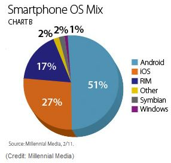

Page 2
For Android, this type of issue would rarely happen. This is because Google has made Android available under a free open source license since 2008 so that both Google developers and outside smart computer intellectuals are able to maintain and update this operating system collaboratively.[3]
| Brand | Points of Satisfaction (/1000) |
|---|---|
| iPhone | 795 |
| Motorola | 763 |
| HTC | 762 |
In regards of customer satisfaction, iPhone has been No.1 for the fifth time, according to the J.D. Power and Associates 2011 U.S. Wireless Smartphone Customer Satisfaction Study, yet Android-equipped phones do not fall too behind in the same field.[4] Based on this study, iPhone earned 795 points of satisfaction out of 1000 from those consumers surveyed, and the following two phones, Motorola and HTC, which both embed Android OS, earned 763 points and 762 points, respectively.

In promotions, both iPhone and Android make a lot of efforts.
This spring, the debut of White iPhone
would again make those
iPhone fans excited and lined up in front of an electronic store.[5]
However, According to Millennial Media, Android is the champion in ad impressions,
which has 51% share, almost the twice of Apple’s 27%.[6]
The result of a long-term competition sometimes comes from the soft power of two entities rather than the hard power. When considering the two firms both developing smartphones, stewardship within the organization also affects the products they bring out. Although Apple Inc. publishes little on Steve Jobs’ health, the outside can make an inference that the absence of this key figure would greatly affect his empire, because most product designs need to be finally approved by Jobs, this technology genius who has a particular taste in art, to implement.[7] Without this “emperor,” even apple fans can hardly imagine what would next iPhone is going to be. In contrast, after Larry Page took the crosier from Eric Schmidt, this flexible smart CEO started plan trying to set Google back to China and recruit more developers for Android.[8] We can imagine when Mr. Page someday puts the “Google phone” development into his agenda, using Android OS which has been tested in many other vendors, the Android-equipped phone would welcome its golden age.
Therefore, the competition between these two giant smartphone providers
remains in process. And, the performance of the two is basically neck in neck
in the marketing domain, with Google Inc. taking a little more advantage
in technology performance of the smartphone operating system and the
soft power of the organization management. We may infer that Google has a higher
chance than Apple to win the championship in the smartphone market in the future.
However, as many other papers on market predictions, this paper can only provide
an inference based on the limited clues we could obtain. As an idiom says,
Let the future determine the future; we just go and see.
Reference:
[1] Webster, Scott. Android leaps beyond RIM to take to spot in U.S. market. CNET News. March 8, 2011.
<http://reviews.cnet.com/8301-19736_7-20040598-251.html?part=rss&subj=news&tag=2547-1_3-0-20 >